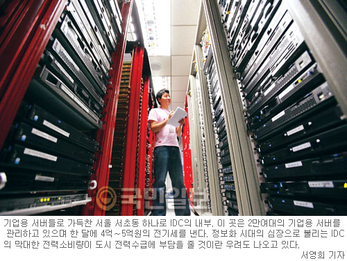

IT산업의 핵심장치인 서버(server). 가로 60㎝·세로 2.5 ㎝에 불과한 서버 한 대가 30평형대 아파트에 맞먹는 전력을 소비하고 있다. 그래서 수만 대의 기업용 서버를 관리하고 있는 인터넷데이터센터(IDC)는 '전기 먹는 하마'에 비유되고 있다. 서버 40만대의 전력소비량이 인구 20만 도시의 전력소비량(가정·산업·공공용 모두 포함)과 맞먹는 실정이다..jpg) 특히 블루투스(Bluetooth)를 탑재한 헤드셋이 눈에 띈다.
블루투스란 가까운 거리에 있는 데스크톱 PC나 노트북, 휴대폰,
가전기기 등을 연결해 주는 일종의 무선 통신 규격으로 사용 분야가
점차 넓어지는 추세다. 이런 블루투스는 헤드셋에도 적합해서
지저분한 유선 케이블이 필요 없고 무엇보다 가지고 다니면서 사용하기에 편리하다.
특히 블루투스(Bluetooth)를 탑재한 헤드셋이 눈에 띈다.
블루투스란 가까운 거리에 있는 데스크톱 PC나 노트북, 휴대폰,
가전기기 등을 연결해 주는 일종의 무선 통신 규격으로 사용 분야가
점차 넓어지는 추세다. 이런 블루투스는 헤드셋에도 적합해서
지저분한 유선 케이블이 필요 없고 무엇보다 가지고 다니면서 사용하기에 편리하다.| 가 | 나 | 다 | 라 |
| A | B | B | D |
| 1 | 2 | 3 | 4 |